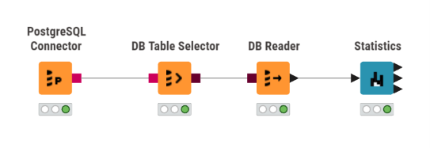
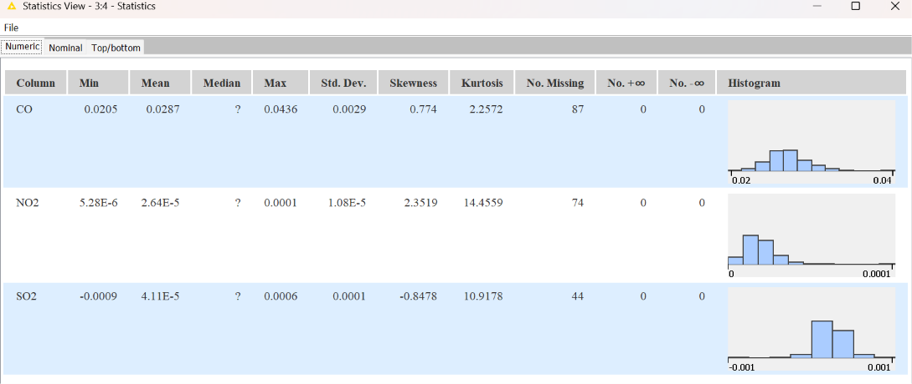
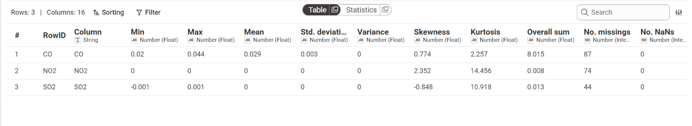
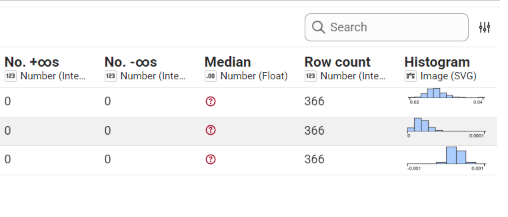

Implementasi Integrasi Aiven PostgreSQL, DBeaver, dan KNIME Analytics Platform#
Di tahap Cloud Data, kita fokus pada “infrastruktur data”: bagaimana data polutan yang sudah diunduh dari Sentinel‑5P (via openEO) disimpan di cloud database, lalu dibaca dan dianalisis menggunakan tools seperti DBeaver dan KNIME Analytics Platform.
1. Gambaran Umum Arsitektur Data#
Secara sederhana, alur data dalam proyek ini adalah:
Sentinel‑5P (Copernicus Data Space) → data polutan (NO₂, CO, SO₂) diekstrak menggunakan openEO.
Hasil olahan openEO disimpan sebagai file CSV (time series harian untuk wilayah Bangkalan).
File CSV diunggah ke cloud database PostgreSQL yang disediakan oleh Aiven.
Koneksi ke database dikonfigurasi menggunakan DBeaver (untuk inspeksi manual).
Data dari PostgreSQL dibaca oleh KNIME Analytics Platform untuk:
statistik deskriptif,
eksplorasi lebih lanjut,
dan potensi integrasi ke dashboard atau model.
Arsitektur ini memungkinkan data disimpan secara terpusat, aman (SSL), dan mudah diakses dari berbagai tools analitik.
2. Langkah 1: Pengambilan Kredensial Database dari Aiven#
2.1 Membuat Layanan PostgreSQL di Aiven#
Masuk ke platform konsol Aiven menggunakan akun aktif, atau daftar jika belum memiliki akun.
Klik tombol Create service, pilih layanan basis data PostgreSQL.
Tentukan:
penyedia cloud (mis. AWS, GCP, Azure),
wilayah server terdekat (mis. Asia Tenggara),
paket layanan (Free Tier atau Startup untuk proyek kuliah).
Berikan nama unik pada layanan tersebut, klik Create service, dan tunggu hingga status peladen berubah menjadi Running.
2.2 Mengambil Informasi Koneksi#
Setelah layanan PostgreSQL aktif:
Buka menu Overview pada layanan PostgreSQL yang baru dibuat di dasbor Aiven.
Salin informasi koneksi penting berikut:
Database name:
defaultdbHost: contoh
pg-sciencedata-projectpsd.c.aivencloud.comPort: contoh
24697User:
avnadminPassword: gunakan password yang ditampilkan melalui ikon mata atau tombol salin pada dashboard Aiven.
SSL mode:
require(wajib, karena Aiven mewajibkan enkripsi SSL).
Unduh berkas sertifikat keamanan:
Klik tombol Show pada bagian CA certificate,
Salin isi sertifikat atau unduh sebagai file
.pem/.crt,Simpan di lokasi yang aman (karena akan dipakai di DBeaver dan KNIME).
Catatan: Nama host, port, dan password di proyek kamu mungkin berbeda; selalu gunakan yang tertera di dashboard Aiven kamu sendiri.

Gambar: Tampilan Overview layanan PostgreSQL di Aiven (contoh).
3. Langkah 2: Konfigurasi Koneksi Aiven PostgreSQL ke DBeaver#
3.1 Membuat Koneksi Baru di DBeaver#
Buka aplikasi DBeaver.
Buat koneksi baru: New Database Connection.
Pilih jenis basis data: PostgreSQL.
3.2 Mengisi Parameter Koneksi#
Pada tab pengaturan utama:
Host: isi dengan host dari Aiven (mis.
pg-sciencedata-projectpsd.c.aivencloud.com).Port: isi dengan port dari Aiven (mis.
24697).Database:
defaultdb.Username:
avnadmin.Password: password yang disalin dari Aiven.
3.3 Mengaktifkan SSL#
Masuk ke pengaturan SSL di DBeaver.
Aktifkan opsi enkripsi SSL (require).
Unggah berkas sertifikat CA yang telah diunduh dari Aiven (file
.pem/.crt).Klik Test Connection untuk memastikan koneksi berhasil.
Jika berhasil, kamu bisa:
Menjelajahi struktur tabel melalui panel Database Navigator:
Databases > defaultdb > Schemas > public > Tables.Memastikan tabel polutan dan kolom data deret waktu (time‑series) sudah tersedia (atau siap dibuat).
4. Langkah 3: Import File CSV Kualitas Udara ke PostgreSQL#
Setelah koneksi DBeaver ke Aiven PostgreSQL siap, langkah berikutnya adalah mengimpor file CSV hasil openEO (CO, NO₂, SO₂) ke dalam tabel di cloud database.
4.1 Persiapan File CSV#
Pastikan kamu memiliki file CSV seperti:
output_CO/timeseries.csvoutput_NO2/timeseries.csvoutput_SO2/timeseries.csv
dengan struktur minimal:
kolom
date(tanggal),kolom
CO/NO2/SO2(nilai konsentrasi).
4.2 Membuat Tabel Polutan (Opsional)#
Kamu bisa membuat tabel baru, misalnya air_quality_bangkalan, dengan skema sederhana:
CREATE TABLE air_quality_bangkalan (
id SERIAL PRIMARY KEY,
date DATE,
co DOUBLE PRECISION,
no2 DOUBLE PRECISION,
so2 DOUBLE PRECISION
);
Atau, jika ingin memisahkan per polutan, bisa buat tiga tabel terpisah (co_timeseries, no2_timeseries, so2_timeseries).
4.3 Import CSV via DBeaver#
Di DBeaver, pada panel kiri (Database Navigator), kembangkan folder koneksi kamu.
Navigasi ke:
Databases > defaultdb > Schemas > public > Tables.Klik kanan pada folder Tables, pilih Import Data….
Pada wizard import:
Pilih format CSV sebagai sumber data.
Klik Next.
Klik Add file, lalu pilih file CSV kualitas udara yang ingin diimpor.
Periksa:
Mapping kolom (pastikan kolom CSV cocok dengan kolom tabel).
Data format (pastikan tanggal dikenali sebagai date, angka sebagai numeric).
Opsi Header line aktif (baris pertama adalah tajuk kolom).
Lanjutkan proses import hingga selesai.
Ulangi langkah ini untuk masing‑masing file CSV (CO, NO₂, SO₂), atau gabungkan dulu ke satu CSV terpadu sebelum diimpor.
5. Langkah 4: Membangun Workflow Analitik di KNIME Analytics Platform#
Setelah data ada di PostgreSQL, kita bisa membangun pipeline analitik menggunakan KNIME.
5.1 Persiapan Koneksi KNIME ke PostgreSQL#
Buka KNIME Analytics Platform.
Pastikan ekstensi database (Database Connector) sudah terinstal.
Buat DB Connector baru:
Pilih tipe: PostgreSQL.
Isi:
Host, port, database, user, password sesuai Aiven.
Aktifkan SSL dan arahkan ke file CA certificate yang sama seperti di DBeaver.
Tes koneksi hingga berhasil.
5.2 Membangun Workflow Sederhana#
Buat workflow baru, lalu seret node‑node berikut dari Node Repository:
DB Connector (PostgreSQL) → untuk menghubungkan KNIME ke server Aiven.
DB Table Selector → untuk memilih skema
publicdan tabel polutan (mis.air_quality_bangkalan).DB Reader → untuk menarik data tabel dari basis data ke dalam memori KNIME.
Statistics → untuk menghitung metrik statistik deskriptif secara otomatis (mean, std dev, skewness, dll.).
Hubungkan node‑node tersebut secara berurutan:
DB Connector → DB Table Selector → DB Reader → Statistics
Konfigurasi singkat:
Pada DB Table Selector:
Pilih skema:
public.Pilih tabel:
air_quality_bangkalan(atau tabel yang kamu gunakan).
Pada DB Reader:
Pastikan semua kolom numerik (CO, NO2, SO2) terpilih.
Klik kanan pada DB Reader, pilih Execute hingga indikator berubah menjadi hijau.

Gambar: Contoh alur workflow KNIME untuk membaca data polutan dari PostgreSQL.
6. Langkah 5: Membaca dan Menganalisis Hasil Statistika Deskriptif#
Setelah data berhasil ditarik dari cloud database Aiven dan diproses melalui alur kerja KNIME, langkah terakhir adalah menjalankan node Statistics untuk mendapatkan ringkasan analitik.
6.1 Menjalankan Node Statistics#
Klik kanan pada node Statistics di lembar kerja KNIME.
Pilih Execute.
Setelah lampu indikator node berubah menjadi hijau, klik kanan lagi dan pilih:
Statistics View, atau
ikon kaca pembesar.
Jendela visualisasi tabel statistik akan terbuka, menyajikan ringkasan parameter analitik untuk setiap polutan (CO, NO₂, SO₂).

Gambar: Tampilan hasil statistik deskriptif di KNIME (contoh).
6.2 Interpretasi Parameter Statistik#
Berikut cara membaca beberapa parameter utama:
Min, Max, & Mean
Digunakan untuk mengidentifikasi:
batas bawah (minimum),
batas atas (maksimum),
nilai rata‑rata (mean) konsentrasi tiap polutan.
Contoh: parameter CO memiliki nilai rata‑rata (mean) sekitar
0.0287dengan rentang dari minimum0.0205hingga maksimum0.0436.
Std. Dev. & Variance
Mengukur tingkat fluktuasi dan penyebaran data harian di sekitar nilai rata‑rata.
Nilai deviasi standar yang kecil mengindikasikan bahwa konsentrasi gas polutan tersebut cenderung stabil sepanjang periode pengamatan.
Skewness & Kurtosis
Skewness: mengukur asimetri distribusi.
Nilai > 0 → distribusi condong ke kanan (right‑skewed).
Contoh: skewness
2.3519pada NO₂ menunjukkan ekor distribusi lebih panjang di sisi kanan.
Kurtosis (excess kurtosis): mengukur keruncingan puncak dan kemungkinan nilai ekstrem (outlier).
Nilai positif tinggi → distribusi lebih “runcing” dengan ekor tebal.
No. Missings
Menampilkan jumlah baris data yang kosong atau bernilai
NULL(misalnya karena tidak ada pengamatan satelit pada hari tertentu).Contoh:
87data kosong pada kolom CO,74pada NO₂,44pada SO₂.
Histogram
Visualisasi grafik batang yang memperlihatkan pola frekuensi sebaran nilai untuk masing‑masing parameter polutan.
Membantu melihat apakah distribusi mendekati normal, miring, atau punya banyak outlier.
7. Penjelasan, Rumus, dan Contoh Perhitungan Statistik#
Node Statistics di KNIME secara otomatis memproses seluruh kolom numerik untuk menghasilkan ringkasan parameter deskriptif. Berikut penjabaran rumus dan contoh perhitungan yang selaras dengan output KNIME dan literatur Data Mining.


Gambar: Contoh output statistik di KNIME (ilustrasi).
7.1 Mean (Rata‑rata Aritmatika)#
Penjelasan: Nilai pusat dari keseluruhan data valid, diperoleh dengan menjumlahkan seluruh observasi lalu dibagi jumlah data valid (\(n\)).
Rumus: $\( \bar{x} = \frac{1}{n} \sum_{i=1}^{n} x_i \)$
Contoh Perhitungan (misal untuk CO):
Jumlah nilai valid: \(\sum x_i = 8.015\)
Jumlah data valid: \(n = 279\)
$\( \bar{x} = \frac{8.015}{279} \approx 0.0287 \rightarrow \text{dibulatkan menjadi } 0.029 \)$
7.2 Standard Deviation & Variance#
Penjelasan:
Standard deviation (\(s\)): mengukur seberapa jauh sebaran data menyimpang dari rata‑rata.
Variance (\(s^2\)): kuadrat dari standar deviasi.
Rumus (sampel): $\( s = \sqrt{\frac{\sum_{i=1}^{n} (x_i - \bar{x})^2}{n - 1}}, \quad s^2 = \frac{\sum_{i=1}^{n} (x_i - \bar{x})^2}{n - 1} \)$
Contoh Perhitungan:
Diketahui jumlah kuadrat deviasi: \(\sum (x_i - \bar{x})^2 = 0.002379\)
\(n = 279\)
$\( s = \sqrt{\frac{0.002379}{279 - 1}} = \sqrt{0.00000856} \approx 0.00292 \rightarrow \mathbf{0.003} \)$Varians:
$\( s^2 = (0.00292)^2 = 0.0000085 \rightarrow \mathbf{0} \text{ (dibulatkan di KNIME)} \)$
7.3 Skewness (Kemiringan Distribusi)#
Penjelasan: Mengukur asimetri kurva distribusi terhadap nilai rata‑rata.
\(> 0\) → right‑skewed (ekor ke kanan).
\(< 0\) → left‑skewed.
Rumus (Fisher‑Pearson): $\( \text{Skewness} = \frac{n}{(n-1)(n-2)} \sum_{i=1}^{n} \left(\frac{x_i - \bar{x}}{s}\right)^3 \)$
Simulasi Perhitungan:
Faktor pengali:
$\( A = \frac{279}{(278)(277)} \approx 0.00362 \)$Akumulasi momen ketiga:
$\( B = \sum \left(\frac{x_i - \bar{x}}{s}\right)^3 \approx 213.81 \)$Skewness:
$\( \text{Skewness} = 0.00362 \times 213.81 \approx \mathbf{0.774} \)$
7.4 Kurtosis (Excess Kurtosis)#
Penjelasan: Mengukur keruncingan puncak distribusi dan probabilitas kemunculan nilai ekstrem (outlier).
Rumus: $$ \text{Kurtosis} = \left[ \frac{n(n+1)}{(n-1)(n-2)(n-3)} \sum_{i=1}^{n} \left(\frac{x_i - \bar{x}}{s}\right)^4 \right]
\frac{3(n-1)^2}{(n-2)(n-3)} $$
Dengan memasukkan seluruh elemen data valid ke dalam rumus momen keempat, diperoleh nilai Excess Kurtosis sekitar 2.257 (contoh).
7.5 Overall Sum#
Penjelasan: Akumulasi penjumlahan total dari seluruh nilai observasi valid.
Rumus: $\( \text{Overall Sum} = \sum_{i=1}^{n} x_i = \bar{x} \times n \)$
Contoh: $\( \text{Overall Sum} = 0.0287 \times 279 \approx \mathbf{8.015} \)$
7.6 Metrik Kualitas Data#
No. Missings
Jumlah baris kosong atau
NULL.Misal:
87baris kosong pada kolom CO.
No. NaNs
Jumlah entri komputasi yang tidak terdefinisi (\(0/0\)), biasanya
0.
No. \(+\infty\) / \(-\infty\)
Jumlah nilai tak terhingga positif/negatif akibat overflow, biasanya
0.
Metrik ini membantu menilai kualitas data sebelum masuk ke pemodelan atau visualisasi lebih lanjut.
8. Penutup: Dari Cloud Data ke Insight#
Dengan arsitektur ini:
Data polutan dari Sentinel‑5P disimpan secara terpusat di PostgreSQL cloud (Aiven).
DBeaver digunakan untuk inspeksi manual dan manajemen tabel.
KNIME menjadi “mesin analitik” yang bisa:
menghitung statistik deskriptif,
membangun pipeline pra‑pemrosesan,
dan nanti bisa diperluas ke model machine learning atau integrasi dashboard.
Di tahap selanjutnya (mis. ekstrasi-fitur), kamu bisa menggunakan pemahaman dari statistik ini untuk:
memilih transformasi yang tepat (mis. log‑transform jika distribusi sangat miring),
menangani missing value secara lebih sistematis,
dan merancang fitur baru yang lebih informatif untuk analisis kualitas udara di Bangkalan.